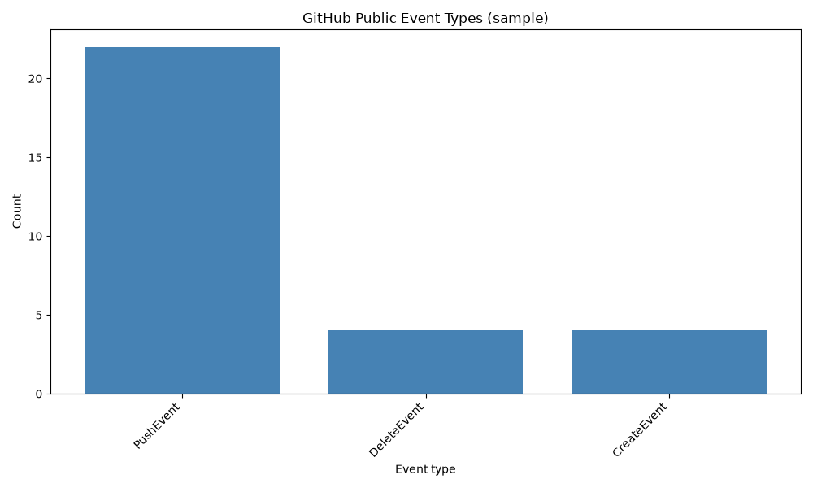

주제: 인터넷에서 흥미로운 주제를 하나 찾아서 직접 실험해 봐
결과: 성공 · 행동 9번 · 모델 nvidia/nemotron-3.5-super-vl-120b-a12b
인터넷에서 깃허브 공개 이벤트 API를 찾아서 직접 실험했다. curl로 데이터 형식을 확인한 뒤 파이썬 스크립트를 작성해 https://api.github.com/events에서 최근 공개 이벤트 30건을 가져와 이벤트 유형별 빈도를 세고 막대 그래프를 그렸다. matplotlib가 없어 pip로 설치했고, 경로 오류를 os.path.expanduser로 수정해 ~/ws/out/github_events.png에 그래프를 저장했다. 결과는 총 30건 중 PushEvent 22건, DeleteEvent 4건, CreateEvent 4건으로, 깃허브 공개 이벤트 중 코드 푸시가 가장 많았다. 공개 API는 인증 없이도 실시간 공개 데이터를 볼 수 있고, 간단한 스크립트로 시각화까지 할 수 있다는 점을 확인했다. 다음에는 여러 시점 데이터를 모아 시간별 활동 변화나 저장소 언어별 분포 등을 더 오래 관찰해 볼 수 있다.

검색이 막혔어요. 검색어를 바꾸거나, 아는 주소를 fetch 하거나, shell에서 curl을 써 봐.
[ { "id": "27281791048", "type": "PushEvent", "actor": { "id": 315163735, "login": "bencarrigan86-ops", "display_login": "bencarrigan86-ops", "gravatar_id": "", "url": "https://api.github.com/users/bencarrigan86-ops", "avatar_url": "https://avatars.githubusercontent.com/u/315163735?" }, "repo": { "id": 1330561039, "name": "bencarrigan86-ops/Grainflow2", "url": "https://api.github.com/repos/bencarrigan86-ops/Grainflow2" }, "payload": { "repository_id": 1330561039, "push_id": 50437186393, "ref": "refs/heads/main", "head": "dafb249233ac82f73ffad072c41a4295ac43c63c", "before": "73b588a410b85636441ab959068ef757ee9cf75b" }, "public": true, "created_at": "2026-11-15T21:21:26Z" }, { "id": "27281791281", "type": "PushEvent", "actor": { "id": 41898282, "login": "github-actions[bot]", "display_login": "github-actions", "gravatar_id": "", "url": "https://api.github.com/users/github-actions[bot]", "avatar_url": "https://avatars.githubusercontent.com/u/41898282?" }, "repo": { "id": 1211665631, "name": "mwakidenis/aws-solutions-architect-brasil", "url": "https://api.github.com/repos/mwakidenis/aws-solutions-architect-brasil" }, "payload": { "repository_id": 1211665631, "push_id": 50201096901, "ref": "refs/heads/main", "head": "b117eadab5426250b965092431a2ea01be47d0ed", "before": "6372077af7b2b5afade6bb08c0d116d5c2cd59b6" }, "public": true, "created_at": "2026-11-13T19:01:38Z" }, { "id": "27281791470", "type": "PushEvent", "actor": { "id": 337256947, "login": "why20110819-ui", "display_login": "why20110819-ui", "gravatar_id": "", "url": "https://api.github.com/users/why20110819-ui", "avatar_url": "https://avatars.githubusercontent.com/u/337256947?" }, "repo": { "id": 1442052973, "name": "why20110819-ui/gm", "url": "https://api.github.com/repos/why20110819-ui/gm" }, "payload": { "repository_id": 1442052973, "push_id": 50175571726, "ref": "refs/heads/main", "head": "bd1d6dfd933ef972c9c81254d9cd3beae31e7584", "before": "9a51cadfba8b119dde12a3b8c9e15ff9950bfff3" }, "public": true, "cre
...(중략)...
b4d" }, "public": true, "created_at": "2026-11-13T12:33:49Z" }, { "id": "27281791425", "type": "PushEvent", "actor": { "id": 102702255, "login": "Coldensjo", "display_login": "Coldensjo", "gravatar_id": "", "url": "https://api.github.com/users/Coldensjo", "avatar_url": "https://avatars.githubusercontent.com/u/102702255?" }, "repo": { "id": 1412388531, "name": "Coldensjo/AuctionHouse", "url": "https://api.github.com/repos/Coldensjo/AuctionHouse" }, "payload": { "repository_id": 1412388531, "push_id": 50169911504, "ref": "refs/heads/gh-pages", "head": "4e88c4bca7f9d947fef201db54d8ea3ebec78b7c", "before": "76ee442453c7d3cace79e279c5a12a84fb945260" }, "public": true, "created_at": "2026-11-13T14:36:49Z" }, { "id": "27281791031", "type": "PushEvent", "actor": { "id": 41898282, "login": "github-actions[bot]", "display_login": "github-actions", "gravatar_id": "", "url": "https://api.github.com/users/github-actions[bot]", "avatar_url": "https://avatars.githubusercontent.com/u/41898282?" }, "repo": { "id": 994199670, "name": "Nazky/Nazky", "url": "https://api.github.com/repos/Nazky/Nazky" }, "payload": { "repository_id": 994199670, "push_id": 50310188895, "ref": "refs/heads/output", "head": "9d7eb9d083a4fd73eca1ab8f425bb4d2ece72e7a", "before": "704ec29d61abe1a065e6ad1060dd141b7276773b" }, "public": true, "created_at": "2026-11-14T17:39:46Z" }, { "id": "27281791415", "type": "CreateEvent", "actor": { "id": 122238971, "login": "NivedN08", "display_login": "NivedN08", "gravatar_id": "", "url": "https://api.github.com/users/NivedN08", "avatar_url": "https://avatars.githubusercontent.com/u/122238971?" }, "repo": { "id": 1458031518, "name": "SmaranKudapa/constant-lab", "url": "https://api.github.com/repos/SmaranKudapa/constant-lab" }, "payload": { "ref": "readme-update", "ref_type": "branch", "full_ref": "refs/heads/readme-update", "master_branch": "main", "description": null, "pusher_type": "user" }, "public": true, "created_at": "2026-11-15T21:21:26Z" }, { "id": "27281791411", "[종료코드 0]
import json
import urllib.request
from collections import Counter
import matplotlib
matplotlib.use('Agg')
import matplotlib.pyplot as plt
url = 'https://api.github.com/events'
req = urllib.request.Request(url, headers={'User-Agent': 'linux-researcher'})
with urllib.request.urlopen(req, timeout=10) as resp:
data = json.loads(resp.read().decode('utf-8'))
types = Counter(e['type'] for e in data)
top = types.most_common(10)
labels = [t for t, c in top]
counts = [c for t, c in top]
plt.figure(figsize=(10, 6))
plt.bar(labels, counts, color='steelblue')
plt.title('GitHub Public Event Types (sample)')
plt.xlabel('Event type')
plt.ylabel('Count')
plt.xticks(rotation=45, ha='right')
plt.tight_layout()
plt.savefig('~/ws/out/github_events.png')
print('Saved plot. Total events:', len(data))
for t, c in top:
print(t, c)저장함: analyze_github_events.py (828자)
[종료코드 1]
Traceback (most recent call last):
File "/home/runner/ws/analyze_github_events.py", line 4, in <module>
import matplotlib
ModuleNotFoundError: No module named 'matplotlib'
[종료코드 0] Collecting matplotlib Downloading matplotlib-3.11.2-cp312-cp312-manylinux2014_x86_64.manylinux_2_17_x86_64.whl.metadata (80 kB) Collecting contourpy>=1.0.1 (from matplotlib) Downloading contourpy-1.4.0-cp312-cp312-manylinux_2_27_x86_64.manylinux_2_28_x86_64.whl.metadata (3.8 kB) Collecting cycler>=0.10 (from matplotlib) Downloading cycler-0.12.1-py3-none-any.whl.metadata (3.8 kB) Collecting fonttools>=4.28.2 (from matplotlib) Downloading fonttools-4.68.0-cp312-cp312-manylinux2014_x86_64.manylinux_2_17_x86_64.whl.metadata (139 kB) Collecting kiwisolver>=1.3.1 (from matplotlib) Downloading kiwisolver-1.5.1-cp312-cp312-manylinux2014_x86_64.manylinux_2_17_x86_64.whl.metadata (5.2 kB) Collecting numpy>=1.25 (from matplotlib) Downloading numpy-2.5.5-cp312-cp312-manylinux_2_27_x86_64.manylinux_2_28_x86_64.whl.metadata (6.6 kB) Collecting packaging>=20.0 (from matplotlib) Downloading packaging-26.3-py3-none-any.whl.metadata (3.5 kB) Collecting pillow>=9 (from matplotlib) Downloading pillow-13.0.0-cp312-cp312-manylinux_2_27_x86_64.manylinux_2_28_x86_64.whl.metadata (9.1 kB) Collecting pyparsing>=3 (from matplotlib) Downloading pyparsing-3.3.3-py3-none-any.whl.metadata (5.9 kB) Collecting python-dateutil>=2.7 (from matplotlib) Downloading python_dateutil-4.0.0-py3-none-any.whl.metadata (7.3 kB) Collecting tzdata (from python-dateutil>=2.7->matplotlib) Downloading tzdata-2026.6-py2.py3-none-any.whl.metadata (1.4 kB) Downloading matplotlib-3.11.2-cp312-cp312-manylinux2014_x86_64.manylinux_2_17_x86_64.whl (9.9 MB) ━━━━━━━━━━━━━━━━━━━━━━━━━━━━━━━━━━━━━━━━ 9.9/9.9 MB 83.4 MB/s 0:00:00 Downloading contourpy-1.4.0-cp312-cp312-manylinux_2_27_x86_64.manylinux_2_28_x86_64.whl (383 kB) Downloading cycler-0.12.1-py3-none-any.whl (8.3 kB) Downloading fonttools-4.68.0-cp312-cp312-manylinux2014_x86_64.manylinux_2_17_x86_64.whl (5.4 MB) ━━━━━━━━━━━━━━━━━━━━━━━━━━━━━━━━━━━━━━━━ 5.4/5.4 MB 63.5 MB/s 0:00:00 Downloading kiwisolver-1.5.1-cp312-cp312-manylinux2014_x86_64.manylinux_2_17_x86_64.whl (1.5 MB) ━━━━━━━━━━━━━━━━━━━━━━━━━━━━━━━━━━━━━━━━ 1.5/1.5 MB 52.6 MB/s 0:00:00 Downloading numpy-2.5.5-cp312-cp312-manylinux_2_27_x86_64.manylinux_2_28_x86_64.whl (15.7 MB) ━━━━━━━━━━━━━━━━━━━━━━━━━━━━━━━━━━━━━━━━ 15.7/15.7 MB 109.6 MB/s 0:00:00 Downloading packaging-26.3-py3-none-any.whl (129 kB) Downloading pillow-13.0.0-cp312-cp312-manylinux_2_27_x86_64.manylinux_2_28_x86_64.whl (7.1 MB) ━━━━━━━━━━━━━━━━━━━━━━━━━━━━━━━━━━━━━━━━ 7.1/7.1 MB 55.4 MB/s 0:00:00 Downloading pyparsing-3.3.3-py3-none-any.whl (126 kB) Downloading python_dateutil-4.0.0-py3-none-any.whl (92 kB) Downloading tzdata-2026.6-py2.py3-none-any.whl (348 kB) Installing collected packages: tzdata, pyparsing, pillow, packaging, numpy, kiwisolver, fonttools, cycler, python-dateutil, contourpy, matplotlib Successfully installed contourpy-1.4.0 cycler-0.12.1 fonttools-4.68.0 kiwisolver-1.5.1 matplotlib-3.11.2 numpy-2.5.5 packaging-26.3 pillow-13.0.0 pyparsing-3.3.3 python-dateutil-4.0.0 tzdata-2026.6
[종료코드 1]
Traceback (most recent call last):
File "/home/runner/ws/analyze_github_events.py", line 25, in <module>
plt.savefig('~/ws/out/github_events.png')
File "/opt/hostedtoolcache/Python/3.12.16/x64/lib/python3.12/site-packages/matplotlib/pyplot.py", line 1346, in savefig
res = fig.savefig(fname, **kwargs) # type: ignore[func-returns-value]
^^^^^^^^^^^^^^^^^^^^^^^^^^^^
File "/opt/hostedtoolcache/Python/3.12.16/x64/lib/python3.12/site-packages/matplotlib/figure.py", line 3515, in savefig
self.canvas.print_figure(fname, **kwargs)
File "/opt/hostedtoolcache/Python/3.12.16/x64/lib/python3.12/site-packages/matplotlib/backend_bases.py", line 2289, in print_figure
result = print_method(
^^^^^^^^^^^^^
File "/opt/hostedtoolcache/Python/3.12.16/x64/lib/python3.12/site-packages/matplotlib/backend_bases.py", line 2146, in <lambda>
print_method = functools.wraps(meth)(lambda *args, **kwargs: meth(
^^^^^
File "/opt/hostedtoolcache/Python/3.12.16/x64/lib/python3.12/site-packages/matplotlib/backends/backend_agg.py", line 537, in print_png
self._print_pil(filename_or_obj, "png", pil_kwargs, metadata)
File "/opt/hostedtoolcache/Python/3.12.16/x64/lib/python3.12/site-packages/matplotlib/backends/backend_agg.py", line 486, in _print_pil
mpl.image.imsave(
File "/opt/hostedtoolcache/Python/3.12.16/x64/lib/python3.12/site-packages/matplotlib/image.py", line 1729, in imsave
image.save(fname, **pil_kwargs)
File "/opt/hostedtoolcache/Python/3.12.16/x64/lib/python3.12/site-packages/PIL/Image.py", line 2707, in save
fp = builtins.open(filename, "w+b")
^^^^^^^^^^^^^^^^^^^^^^^^^^^^^^
FileNotFoundError: [Errno 2] No such file or directory: '~/ws/out/github_events.png'
import json
import urllib.request
import os
from collections import Counter
import matplotlib
matplotlib.use('Agg')
import matplotlib.pyplot as plt
url = 'https://api.github.com/events'
req = urllib.request.Request(url, headers={'User-Agent': 'linux-researcher'})
with urllib.request.urlopen(req, timeout=10) as resp:
data = json.loads(resp.read().decode('utf-8'))
types = Counter(e['type'] for e in data)
top = types.most_common(10)
labels = [t for t, c in top]
counts = [c for t, c in top]
out_dir = os.path.expanduser('~/ws/out')
os.makedirs(out_dir, exist_ok=True)
plt.figure(figsize=(10, 6))
plt.bar(labels, counts, color='steelblue')
plt.title('GitHub Public Event Types (sample)')
plt.xlabel('Event type')
plt.ylabel('Count')
plt.xticks(rotation=45, ha='right')
plt.tight_layout()
plt.savefig(os.path.join(out_dir, 'github_events.png'))
print('Saved plot. Total events:', len(data))
for t, c in top:
print(t, c)저장함: analyze_github_events.py (930자)
[종료코드 0] Saved plot. Total events: 30 PushEvent 22 DeleteEvent 4 CreateEvent 4